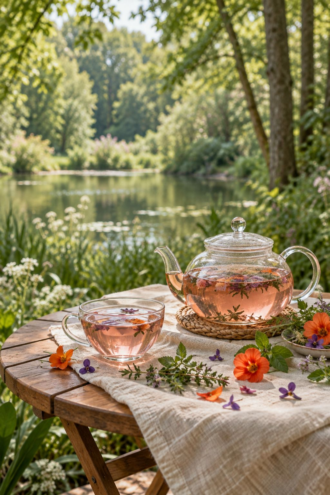
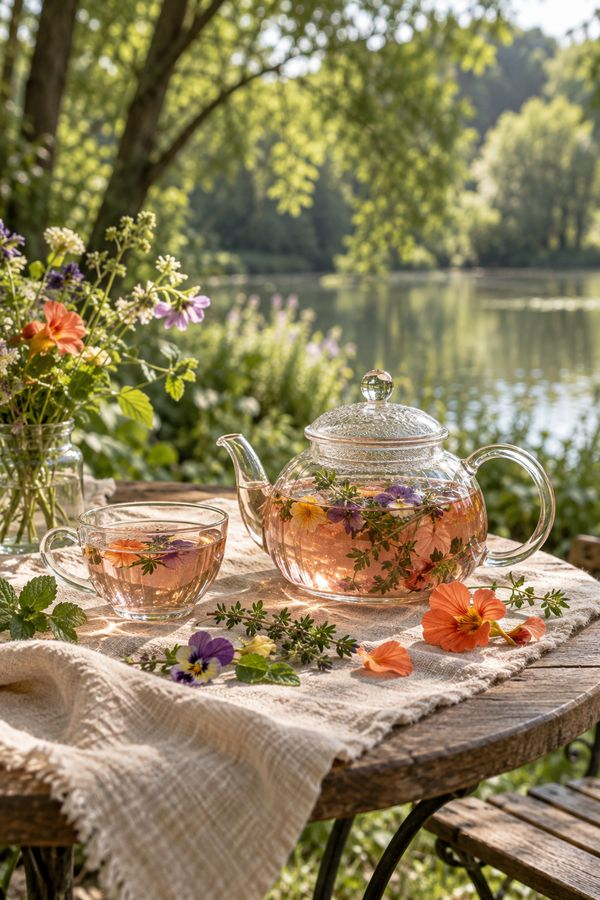
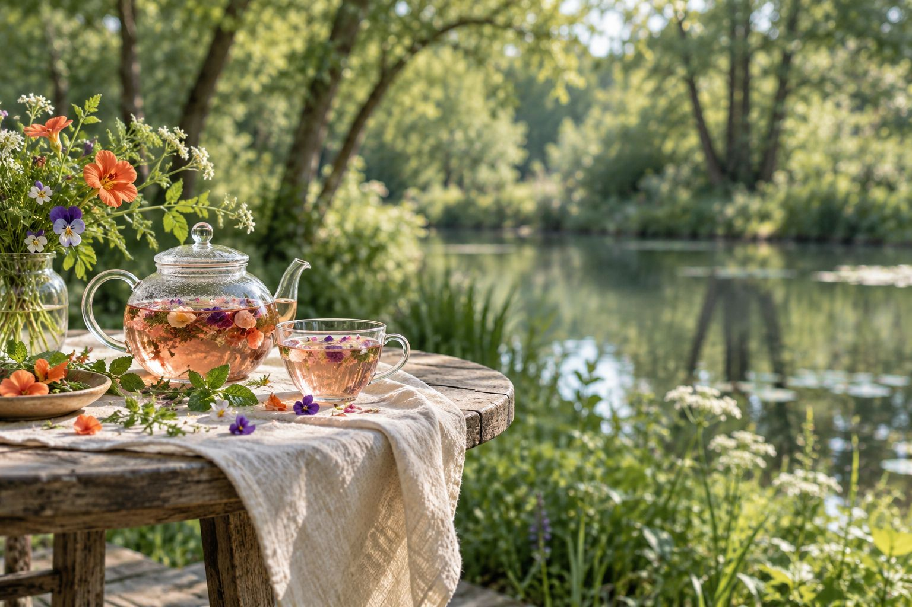

Herb tea
ハーブティー
メニューの最初のページに並ぶお茶。種類が多く、カフェインが苦手な人でも選べるものが多いという声。ポットで出てきます。

Flower shop & Cafe ／ 市川市国府台
flower and cafe
じゅんさい池緑地のとなりにある、花屋とカフェがひとつになったお店。口コミには リゾートのよう
緑が多くて落ち着く
器や盛り付けが凝っている
という声が並びます。大きな窓の外は木立、店の真ん中には切り花と観葉植物。

午後、テラスは建物の陰に。 風が通って心地よい時間。
※営業日・時間はGoogleマップの情報です。午後の日陰は口コミにある様子をもとにした目安で、季節や天気で変わります。

By the pond
じゅんさい池緑地のとなり。にぎやかな通りを忘れて、ゆったりした時間を過ごせる、という声が並びます。
店の真ん中が、花の売り場。口コミによると、切り花は7〜8種類。プリザーブドフラワーや観葉植物も並びます。
カフェの席から花を眺められるのも、このお店ならでは。花束の予約方法や、その日の入荷は実際の内容に差し替えます。
営業日・時間はGoogleマップの情報（2026年10月）
臨時のお休みや営業日の変更は Instagram でお知らせします。
〒272-0827
千葉県市川市国府台6丁目1-2
営業は金・土・日の11:30〜17:30です（Googleマップの情報）。臨時の変更は Instagram でお知らせします。
テラス席にはリードをつなぐフックがあります。店内に入れるかどうかを、お店のルールに合わせて書きます。
ハーブティーの種類が多く、カフェインが苦手な人でも選べるものが多い、という口コミがあります。ノンカフェインのお茶の一覧を入れます。
花束の予約・取り置きの方法と、予算の伝え方を、実際の内容に合わせて書きます。
使える支払い方法を、実際の内容に合わせて書きます。